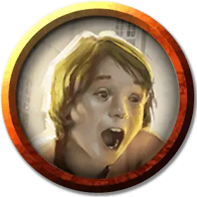

Теренцио Кассалантер
Terenzio Cassalanter
Маленький Гуманоид (Человек), нейтральный, именной НИП

Класс Доспеха 10
Хиты 1 (1к4 - 1)
Скорость 30 футов
| мод | спас | ||
|---|---|---|---|
| СИЛ | 10 | +0 | +0 |
| ЛОВ | 10 | +0 | +0 |
| ТЕЛ | 10 | +0 | +0 |
| мод | спас | ||
|---|---|---|---|
| ИНТ | 10 | +0 | +0 |
| МДР | 10 | +0 | +0 |
| ХАР | 10 | +0 | +0 |
Чувства пассивное Восприятие 10
Языки Общий
Опасность 0
Бонус мастерства +2
Описание
Близнецы Кассалантеры не состоят в культе их родителей. Друзей у них нет, их обучают на дому и редко выпускают из поместья. При незнакомцах Теренцио становится застенчивым и недоверчивым, а Эльзерина — бойкой и общительной. Оба ребёнка будут очень рады встретить дружелюбных незнакомцев и устроят своим «новым друзьям» экскурсию по дому. Они помогут персонажам пройти по вилле незамеченными, поскольку детям принимать гостей не разрешают.